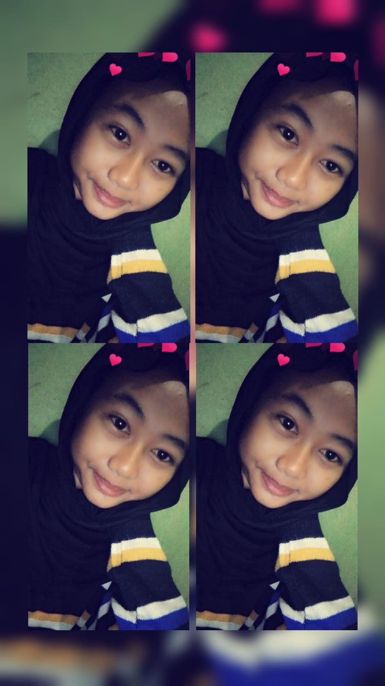
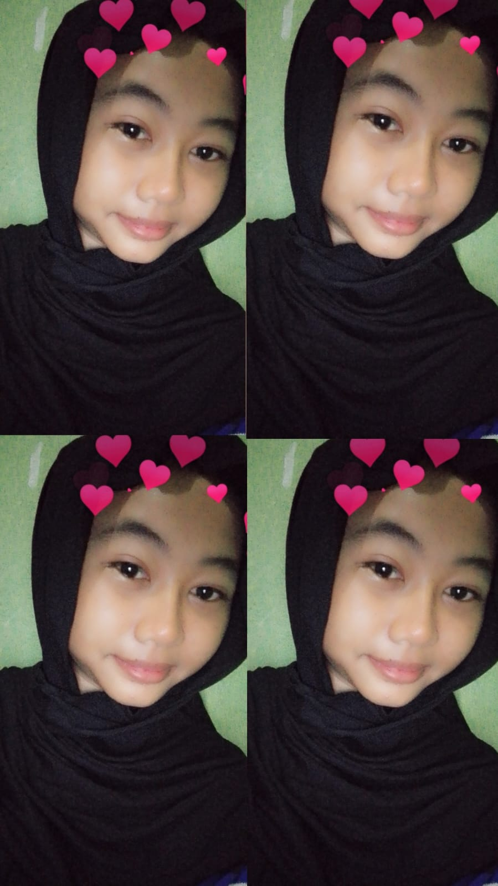
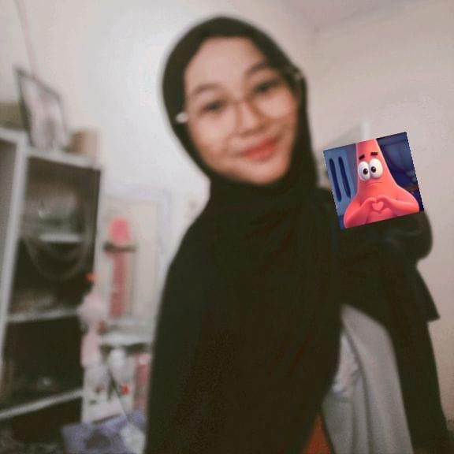

for you, asyifa
melainkan tentang bagaimana kita memilih satu sama lain
setiap hari, dalam setiap versi kehidupan.



Terima kasih telah menjadi rumah bagiku di dunia yang kadang terasa berat.
Aku tidak berjanji segalanya akan mudah.
Aku hanya berjanji,
aku akan selalu memilihmu —
di setiap pagi, di setiap malam, di setiap versi diriku.
Selamanya milikmu.
— Aku